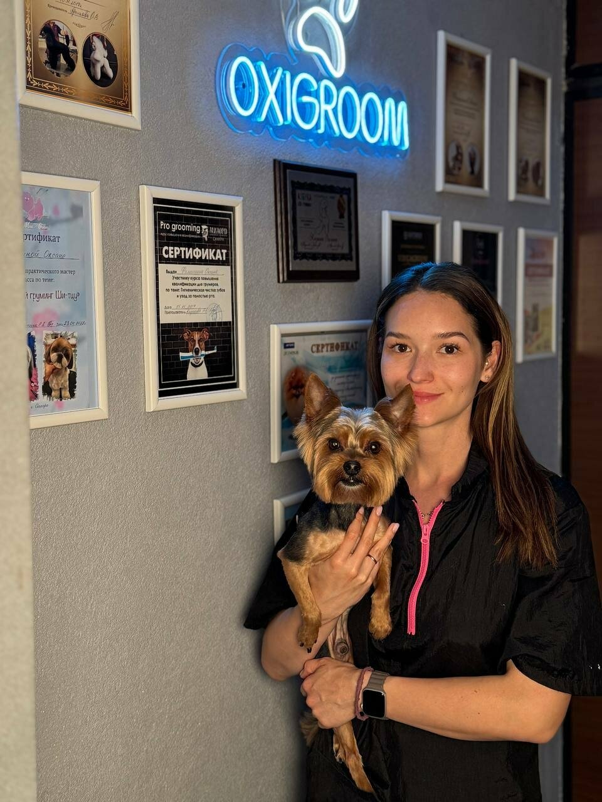
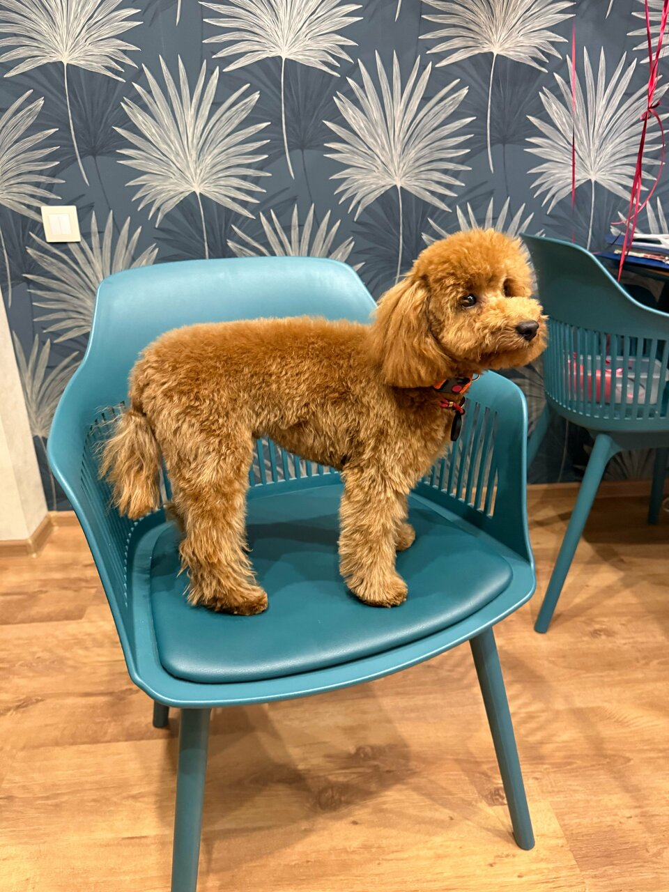
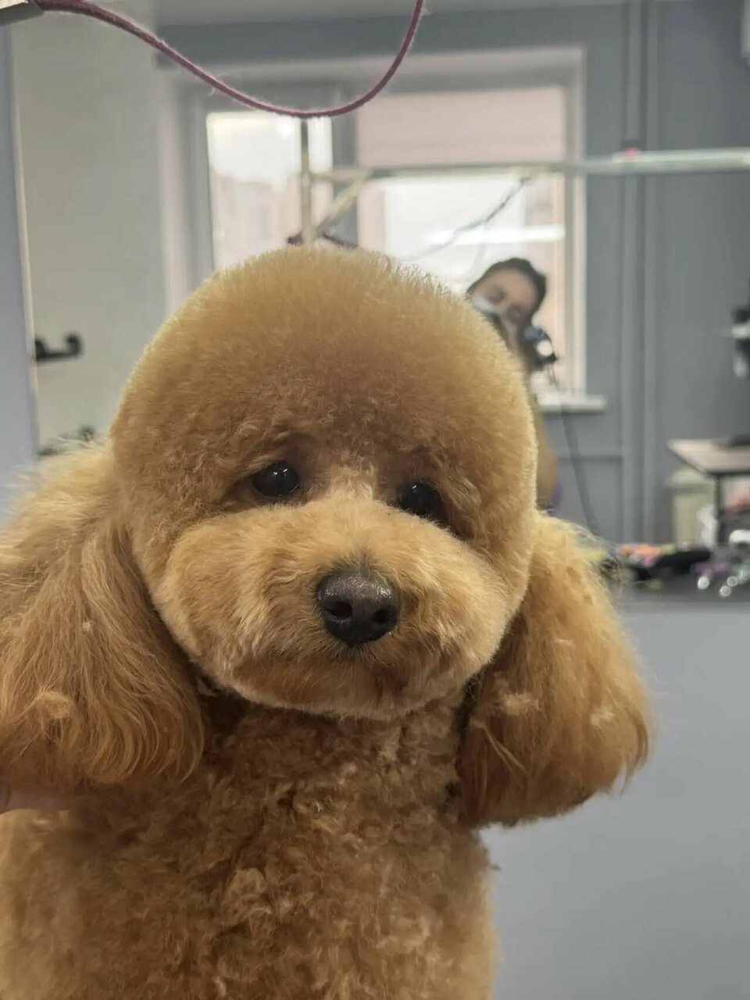

Были недавно у Оксаны на стрижке. Всё супер! До визита шерсть торчала во все стороны, а дома постоянно летел подшерсток. У нашего шпица густая шерсть, быстро сваливается и плохо расчёсывается дома. После ухода она стала воздушной, мягкой и совершенно без колтунов.
Груминг на Садовой в Саратове
Груминг на Садовой в Саратове делают в ОксиГрум, дом 106, корпус 9. Это отдельная точка, не соседняя студия на той же улице. Приём каждый день с 10:00 до 20:00, по записи. Собаку и кошку стригут Оксана Козина, Ольга, Елена, Елизавета, Ксения и Екатерина. SPA-ванна есть только здесь. Наркоза нет.

Кто принимает на 2-й Садовой
Оксана Козина в груминге с 2016 года. Отзывы этой точки читают на Яндекс Картах и в 2ГИС.
Кто стрижёт
Стригут Оксана Козина, Ольга, Елена, Елизавета, Ксения и Екатерина. Породу, вес и колтуны смотрят до начала и называют сумму заранее.
Занятия с Оксаной
Оксана учит очно, рядом с собакой: группа с нуля, один на один, мастер-класс, проба и уход для владельца своей собаки. Даты и стоимость называют в переписке.
Услуги этой студии
Программы те же, что на главной. На каждой странице разобрано, что входит и чего в процедуре нет.

Комплексный груминг
Мытьё в три этапа, сушка с вычёсыванием, стрижка корпуса и головы, уши, лапы и когти.
Комплекс
Стрижка и груминг собак
Йорк, пудель, шпиц, мальтипу, бишон, болонка, ши-тцу и чихуахуа. Запись в эту студию на 2-й Садовой.
Собаки
Груминг кошек
Мытьё, вычёс подшёрстка, когти и уши. Стрижки корпуса и ветприёма нет.
КошкиГигиенический груминг
Мытьё, сушка, стрижка головы, лапы, когти и уши. Стрижки корпуса в этой услуге нет.


SPA-уход
SPA-ванна на этой студии: 1700 ₽ или плюс 700 ₽ к процедуре. Только для собаки, это уход, не лечение.
SPA
Экспресс-линька
Три этапа мытья, маска, пар и вычёс подшёрстка. Это не стрижка.
Линька
Тримминг
Созревшая шерсть у шнауцера, фокстерьера и жесткошёрстной таксы. Не машинкой.
ТриммингКак найти ОксиГрум на 2-й Садовой
Адрес этой страницы: 2-я Садовая улица, 106 к9. Вход узнают по бирюзовой вывеске ОксиГрум на фасаде корпуса 9. На 2-й Садовой есть и другие дома, поэтому в навигаторе нужна именно эта точка.
Ниже одна карточка этой студии на Яндекс Картах. Запись на груминг отдельной кнопкой, в тексте сообщения уже указана 2-я Садовая.
Карта стоит на корпус 9 дома 106, не на другую студию улицы.
Яндекс Карты этой студии · 2ГИС этой студии



Вопросы о студии на 2-й Садовой
Ответы про этот вход. Вторая студия, на улице Панченко, разобрана на своей странице.
Что делают на груминге на Садовой?
Питомец возвращается чистым, ухоженным и аккуратно подстриженным, без колтунов и лишней шерсти. В зависимости от выбранной процедуры мы делаем мытьё, сушку с вычёсыванием, уход за глазами, ушами, когтями, лапами и зоной паха, а также стрижку по запросу. Нам важно вернуть животному опрятный вид и комфорт в повседневной жизни. Подобрать точный формат и уточнить стоимость можно по телефону +7 927 226-63-13, во ВКонтакте и в MAX.
Кто стрижёт на 2-й Садовой?
В студии ОксиГрум работает Оксана Козина, которая занимается грумингом с 2016 года, а стригут Оксана, Ольга, Елена, Елизавета, Ксения и Екатерина. Мы работаем бережно, подбираем уход под конкретную породу, вес, состояние шерсти и наличие колтунов, без ветклиники и выезда на дом. На 2-й Садовой улице, 106 к9 есть SPA ванна, которой нет на улице им. Панченко К.П., 6. Точный объём процедур и цену мы всегда обсуждаем до начала работы.
Сколько по времени длится визит и как записаться на 2-ю Садовую?
Длительность зависит от размера животного, состояния шерсти и выбранной процедуры, поэтому точное время мы подсказываем при записи. Студия работает ежедневно с 10:00-20:00 по предварительной записи. Чтобы выбрать удобное окно, позвоните по телефону +7 927 226-63-13 или напишите во ВКонтакте и в MAX. Запишитесь заранее, чтобы мы забронировали для вашего питомца нужное время.
Не будет ли питомцу больно и не сбреют ли шерсть под ноль во время визита?
Мы работаем аккуратно и без спешки, чтобы животное не испытывало лишнего стресса и боли. Шерсть под ноль мы не сбреваем в рамках экспресс-линьки, а корпус стрижём только по желанию владельца, если речь о комплексе, либо оставляем нужную длину в гигиене. Наркоз в студии не применяется совсем. Перед началом мы всегда согласовываем с вами, что именно будем делать с шерстью.
Подойдёт ли студия на 2-й Садовой, если нужна SPA ванна и бережный уход за шерстью?
Да, SPA ванна установлена именно на 2-й Садовой улице, 106 к9, а на Панченко её нет. Сама SPA процедура: точную сумму называем при записи, при этом итоговая сумма зависит от породы, веса, запущенности и колтунов. Уход помогает глубоко очистить шерсть и улучшить её состояние без лишнего дискомфорта. Позвоните по телефону +7 927 226-63-13, чтобы уточнить детали под вашего питомца.
От чего зависит цена на Садовой?
Сумму называют до визита: смотрят породу, вес и колтуны. Гигиена от 1000 ₽, экспресс-линька собаки от 2500 ₽, обычная кошка 2700 ₽. SPA на этой точке 1700 ₽ или плюс 700 ₽ к процедуре. Комплекс и тримминг без цифры на сайте, их называют в записи.
Насколько быстро заметен эффект после процедуры и когда лучше планировать следующую запись?
Эффект от мытья, вычёсывания и стрижки виден сразу после завершения процедуры: шерсть становится чистой и ухоженной, а уход за когтями и лапами добавляет комфорта. При этом экспресс-линька не обещает, что линька закончится навсегда, а помогает качественно вычесать отмерший подшёрсток. Следующий визит удобно планировать по мере отрастания шерсти и появления нового подшёрстка. Записаться можно ежедневно с 10:00-20:00 по телефону +7 927 226-63-13.
Как записаться на груминг на Садовой?
Если вам нужна точка на 2-й Садовой улице, 106 к9, вы можете прийти сюда по предварительной записи с 10:00-20:00 в любой день недели. У нас понятные правила работы: мы не используем наркоз, не выезжаем на дом и заранее обсуждаем все этапы ухода с владельцем. При необходимости мы подскажем, какая услуга подойдёт именно вашему питомцу с учётом его шерсти и возраста. Свяжитесь с нами по телефону +7 927 226-63-13 или во ВКонтакте и в MAX.
Отзывы о студии на 2-й Садовой
Тексты с карточек этого адреса. Оценка на сайт не перенесена.
Доброго дня! Хочу оставить отзыв про «ОксиГрум». Наконец-то в нашем районе появилось место, где можно привести собаку в порядок рядом с домом! Помыли нашу американскую акиту просто чудесно, она вышла чистенькая, ухоженная и очень довольная.
Хочу выразить огромную благодарность грумеру Оксане! Недавно я впервые доверила своего питомца этому специалисту, и результатом осталась очень довольна. У нас это была первая процедура гигиены, скоро будем делать полный комплекс.
В первый раз обратились именно к вам, так как недалеко от дома и очень хорошие отзывы. Честно говоря, наш пёсик ну очень активный. Но несмотря на это вы справились с нашим непоседой, очень прекрасно его постригли, мы очень довольны. Оксана, спасибо вам огромное. Теперь мы только к вам.
Приводила корги на экспресс-линьку. Результатом осталась очень довольна! Домой вернулся чистый ребёнок, больше не линяет и вкусно пахнет. Спасибо за вашу работу.
Ходим на груминг со своим пуделем к Оксане, и нам всё очень нравится! Стрижка просто идеальная, линии ровные, всё аккуратно и красиво. После первого комплексного груминга собачку было не узнать! Ушли мы туда маленьким домовёнком, а домой вернулись настоящим красавчиком — таким аккуратным, пушистым, ухоженным и невероятно милым!
У нас шипперке, ходим в ОксиГрум уже лет 5 на экспресс-линьку. Разница реально заметна, после процедуры собачка чистенькая, шерсть блестит, такая гладенькая и ещё вкусно пахнет, потому что в конце всегда брызгают духами. Мы довольны, ходим с удовольствием!
Проходила базовый курс грумера с нуля. Очень понравилось обучение, как преподавателя рекомендую.
Дальше по сайту
Те же разделы, что с главной. Вторая студия — отдельной карточкой.